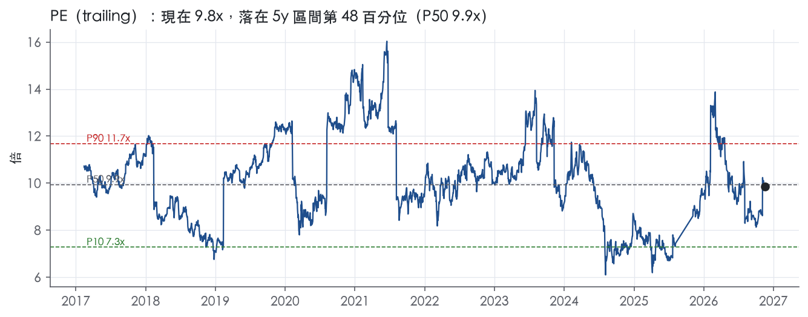

評等總表 › 未分類 › 7203.T
トヨタ自動車（7203.T）
乾淨盈餘不成長、倍數小幅收斂，中性｜評等 減碼｜目標價 3258
評等歷史與財報快評
| 報告日 | 評等 | 目標價 | 當時股價 | 超額報酬 |
|---|---|---|---|---|
| 2026-11-17 | 減碼 | 3,258 | 3,399 | -9.0% |
| 2026-11-13 | 減碼 | 3,164 | 3,418 | -12.6% |
| 評等 | 減碼 |
| 12 個月目標價 | 3258 日圓 |
| 現價 | 3399.00 日圓（2026-11-17） |
| 預期報酬 | 股價 -4.1%＋股息 2.9%＝總報酬 -1.2%；日股門檻 7.8%，超額 -9.0% |
| 估值方法 | P/E 10.5x，套在第 5–8 季的EPS（也就是一年後的未來四季） |
| 三情境 | 熊 2277／基準 3345／牛 4079 |
| 研究流程 | 四位研究員兩輪辯論＋研究總監裁決 |
| 資料來源 | EDINET、TDnet、J-Quants、Yahoo、FRED（全免費） |
目錄
第一章 結論摘要
乾淨盈餘不成長、倍數小幅收斂，中性（研究總監裁決，四位研究員兩輪辯論後）
評等 減碼｜12 個月目標價 3258 日圓（總監三情境機率加權 3415 與研究員中位數 3101 各半）｜現價 3399.00（2026-11-17）
預期報酬：股價 -4.1%＋股息 2.9%＝總報酬 -1.2%。日股門檻 7.8%，超額 -9.0%。
估值方法：P/E 10.5x，套在第 5–8 季的EPS（也就是一年後的未來四季）。三情境：熊 2277（12%）／基準 3345（61%）／牛 4079（27%）。
立場中性而評等減碼：評等看的是「預期總報酬 -1.2% − 日股門檻 7.8%」＝超額 -9.0%，不是絕對漲跌；中性但超額偏離門檻，代表情境機率或股利把報酬推離門檻。
評等說明：研究總監自己的機率加權目標價 3415 日圓對應「中立」；與研究員第二輪中位數 3101 日圓各半後為 3258 日圓，落入「減碼」。兩者只差一級，請把這檔讀成「中立～減碼」，正文裡總監的立場文字以「中立」寫成。
什麼會讓研究總監改變看法：FY2028期初計畫營業利益低於FY2027實績、且Q3累計原価改善拖累以上半年速度擴大，營益率降到7.2%、倍數降到9.5x轉空；FY2028計畫高於實績且公告1,500B以上買回，倍數升到11.0x、股數−4%轉多。
投資論點
- 乾淨盈餘不成長：營收只成長 4.0%，大額買回不會重複，乾淨 EPS 一年內不成長。
- 報酬低於門檻：倍數由 11.0x 收斂到 10.5x，含股息總報酬 -1.2%，低於 7.8% 門檻。
- 北美轉盈是反方：北美轉盈、FY2028 計畫高於實績且買回 1,500B 以上，我們轉多。
關鍵數字
| 過去四季（實際，FY2027Q2） | 未來四季 | 第 5–8 季 | 第 9–12 季 | |
|---|---|---|---|---|
| 營收（B） | 53,016.7B | 55,137.3B | 57,342.8B | 59,923.2B |
| 營收成長 | 7.4% | 4.0% | 4.0% | 4.5% |
| 營業利益率 | 7.5% | 7.5% | 7.5% | 7.6% |
| EPS（日圓） | 345.15 | 300.19 | 318.55 | 343.49 |
| EPS 成長 | -2.4% | -13.0% | 6.1% | 7.8% |
| 每股股息（日圓） | — | 0.00 | 0.00 | 0.00 |
| P/E（現價） | 9.8x | 11.3x | 10.7x | 9.9x |
| 股息殖利率（現價） | 2.9% | — | — | — |
過去四季為申報數字；預測為研究總監的假設、程式計算。倍數與殖利率都用現價計算，用來看現價對應各期獲利的高低。
與上次報告比較
| 項目 | 上次（2026-11-15） | 這次（2026-11-16） | 變動 |
|---|---|---|---|
| 評等 | 減碼 | 減碼 | ＝ |
| 機率加權目標價（日圓） | 3,164 | 3,258 | +3.0% |
| 超額報酬 | -12.6% | -9.0% | +3.5 pp |
| 目標倍數 | 11.5x | 10.5x | — |
| 未來四季營收成長 | 4.0% | 4.0% | +0.0 pp |
| 未來四季營益率 | 7.3% | 7.5% | +0.2 pp |
| 未來四季 EPS（日圓） | 253.10 | 300.19 | +18.6% |
| 熊／基準／牛機率 | 18／56／26 | 12／61／27 | — |
程式計算；「未來四季」各自從當次報告的資料起點算。研究總監逐點說明見第八章「與上次報告比較」。
三情境
| 情境 | 機率（歷史） | 故事 | 未來四季營收成長 | 第 5–8 季營益率 | 倍數 | 目標價 | 股價漲跌 |
|---|---|---|---|---|---|---|---|
| 熊 | 12%（9%） | 風險表第1條：本行日本上行路徑日圓145使半期685.0B匯率貢獻反轉；疊加第2條關稅不降、北美重回虧損與第5條金融事業殘值與資金成本壓縮；倍數回帶P50 | 2.0% | 6.3% | 8.8x | 2277 | -33.0% |
| 基準 | 61%（62%） | 日圓153、量平價漲、原價改善續負不擴大、關稅不增量、買回回常態，乾淨EPS一年內不成長，倍數自11.0x小幅收斂 | 4.0% | 7.5% | 10.5x | 3345 | -1.6% |
| 牛 | 27%（29%） | 本行基準總經（日圓153）下北美由FY2026稅前−544.52B轉盈、關稅吸收、原價改善轉正，FY2028計畫高於實績且不靠弱日圓，市場付略高於持平的倍數 | 6.0% | 8.2% | 11.5x | 4079 | 20.0% |
目標價由程式依研究總監的驅動與倍數計算；機率由研究總監給定。括號內是歷史頻率：把這檔股票過去十年 12 個月報酬的波動形狀，置中在基準情境，結果落在各情境附近的比例。

四位研究員用不同方法各自估值，回應研究總監的質疑後交出第二輪，最後由總監逐點裁決。各研究員的主張見第七章，裁決理由見第八章，完整論證見《研究底稿》。
| 立場（一輪→二輪） | 加權目標價（一輪→二輪） | 評等（一輪→二輪） | 第二輪倍數 | 熊～牛目標價 | |
|---|---|---|---|---|---|
| R1 成長與敘事 | 中性→看空 | 3177→3211 | 減碼→減碼 | 9.5x | 2348～3808 |
| R2 資本報酬與價值 | 看空→看空 | 3018→2991 | 賣出→賣出 | 9.9x | 2064～3666 |
| R3 盈餘品質與下檔 | 看空→看空 | 3166→2979 | 減碼→賣出 | 9.5x | 2161～3897 |
| R4 市場隱含預期 | 看空→看空 | 3345→3415 | 減碼→中立 | 10.5x | 2294～4111 |
| 研究總監裁決 | 中性 | 3258 | 減碼 | 10.5x | 2277～4079 |
目標價由程式依各自的驅動與倍數計算；評等＝機率加權總報酬 − 日股門檻。
第二章 業務概況
公司做什麼、賣給誰
トヨタ自動車是一家以汽車事業為核心、金融事業為第二成長引擎，憑藉全球1.5億台保有量的規模優勢同步發展車輛相關服務與軟體事業的綜合移動出行集團。公司及其關係會社（子公司602家、關聯公司與共同支配企業159家，2026年3月31日現在）從事汽車事業、金融事業及其他事業三大類業務。汽車事業涵蓋轎車、小型車、SUV、卡車等整車與相關零組件的設計、製造及銷售，主要由本公司、日野自動車及大發工業製造，部分委託豐田車體等生產，海外則由豐田汽車製造肯塔基等公司製造。產品在日本國內透過豐田Mobility東京等全國經銷商銷售，部分大客戶由本公司直接銷售；海外則透過美國豐田汽車銷售公司等銷售公司銷售。LTM（LTM@FY2027Q2）營收53,016.66B、EBITDA 6,500.84B，顯示公司規模居全球汽車業前列。
業務分部與產品
公司依IFRS分為汽車、金融、其他三個報告分部，汽車事業為營收與利潤的絕對主體，金融事業是穩定的第二支柱。半期（2026年4-9月）汽車事業對外營業收入23,981.1B，較去年同期增加112.7B（8.5%）；分部營業利益1,598.2B，較去年同期增加112.7B（7.6%），增益主因為匯率變動影響。金融事業對外營業收入2,762.0B，較去年同期增加（18.5%）；分部營業利益472.3B，較去年同期增加21.9B（4.9%），增益主因融資餘額增加。其他事業對外營業收入938.9B，較去年同期增加（27.6%）；分部營業利益129.0B，較去年同期增加60.1B（87.3%）。主要車型產品包括LS、RX、Crown、Corolla、RAV4、Yaris、Hilux、Camry、Tacoma、Land Cruiser、Alphard、Noah等。汽車事業研發支出1,507.04B，其他事業研發支出15.84B，全集團研發支出合計1,522.88B。設備投資方面，當期合計2,390.66B（+12.0%），其中汽車事業2,284.13B（+14.7%）、金融事業41.785B（-0.2%）、其他事業64.749B（-35.9%），另有租賃用資產3,639.67B（-5.4%）。海外子公司重點設備投資包括泰國豐田209.87B、Toyota Battery Manufacturing 186.56B、加拿大豐田製造117.79B。
客戶、地區與通路
公司按地區劃分為日本、北美、歐洲、亞洲及其他地區（中南美、大洋洲、非洲、中東）五大區域，各區規模與利潤貢獻差異明顯。半期日本營業收入11,752.5B，較去年同期增加136.2B（11.8%），分部利益1,253.3B，增加136.2B（12.2%），增益主因匯率變動。北美營業收入11,922.1B，較去年同期增加（13.9%），分部利益166.1B，大幅增加234.0B，增益主因諸費用減少與節省努力。歐洲營業收入3,755.6B，較去年同期增加（19.4%），分部利益219.2B，增加18.4B（9.2%），增益主因營業面努力。亞洲營業收入4,677.3B，較去年同期增加（5.1%），但分部利益437.1B，減少7.1B（1.6%），減益主因諸費用增加。其他地區營業收入2,658.2B，較去年同期增加（14.2%），但分部利益200.9B，減少900M（0.5%），減益主因銷售面影響。半期全球汽車合併銷售台數475萬8千台，較去年同期減少2萬5千台（0.5%）；日本國內銷售102萬4千台，增加5萬4千台（5.6%）；海外373萬4千台，減少7萬9千台（2.1%），顯示日本本土需求回升但海外（尤其北美、亞洲）台數承壓、靠單車利潤與匯率支撐利潤成長。股東結構上，日本Master Trust信託銀行持股12.80%、豐田自動織機持股9.15%、日本Custody銀行6.10%，前十大股東合計持股51.07%（2026年3月31日現在），顯示集團內交叉持股仍是公司治理與資本結構的重要特徵。
最近四季發生了什麼
過去四個財季顯示營收穩健成長、但利潤率受匯率與關稅等因素波動明顯。FY2026Q4（2025-03-31結算前推導）營業利益率降至4.5%、淨利817.21B、EPS 62.70（dv層級資料包）；FY2027Q1營收13,525.40B、年增10.4%，營業利益率回升至7.9%，淨利1,477.04B、EPS 120.69；FY2027Q2營收13,437.06B、年增8.6%，營業利益率8.4%，淨利759.40B、EPS 65.28（is/、FY2027Q2）。以半期（2026年4-9月）累計觀察，公司營業收益合計26,962.4B，較去年同期增加2,331.7B（9.5%）；營業利益2,191.1B，增加185.4B（9.2%）；稅前中間利益2,954.4B，增加476.2B（19.2%）；歸屬母公司中間利益2,236.4B，大增463.0B（26.1%）。營業利益增減要因中，匯率變動貢獻685.0B，營業面努力貢獻165.0B，原價改善努力則拖累340.0B，其他項目拖累304.6B。現金及約當現金期末餘額9,484.4B，較前期末減少3,175.1B（25.1%），主因財務活動現金流出大幅擴大至4,207.8B，主要是庫藏股買回3,851.89B（半期連結持分變動表）。公司最新一份短信揭示的FY2027（2027年3月期）全年計畫為營收53,500.00B、營業利益3,900.00B、稅前利益4,960.00B、歸屬母公司淨利3,570.00B、EPS 299.95日圓。以半期實際營業利益2,191.1B換算，下半年僅需再賺約1,708.9B即可達標，隱含下半年利潤率將明顯放緩，顯示公司計畫偏保守、留有上調空間。
公司自己說的成長引擎與策略
公司將「商品軸」與「地域軸」經營列為核心戰略，透過TNGA群戰略與「其町第一の車屋」地域信賴關係構築穩固收益基盤。2025年10月東京車展上，公司在Toyota、Lexus、Daihatsu、GR之外新增「Century」品牌，定位為「向世界發送日本自信的品牌」。公司強調持續改善損益平衡台數，因認證問題、餘力不足整頓告一段落，但人力與未來投資擴大加上美國關稅影響，使損益平衡台數上升，故全公司推動固定費檢視、成本改善與AI活用以提升生產力。公司視「Value Chain事業」（新車銷售後的保有期間服務、保險、中古車、金融）為モビリティ公司轉型的重要支柱，憑藉全球1.5億台保有量與高殘值支撐持續成長。SDV（軟體定義汽車）被列為交通事故零社會目標的核心手段，透過「車、人、基建」三位一體與「Arene」軟體開發平台推動；Toyota Woven City則作為「移動測試場」持續推進，2025年9月正式啟動。政策保有股方面，公司持續縮減交叉持股，上市股票持股從2022年3月末53家縮減至2026年3月末34家，殘值合計3,309.3B，佔合併淨資產比重由12.2%降至8.1%，反映東證資本效率改善要求下的庫藏股買回與交叉持股處分趨勢。整體看，公司成長敘事建立在「商品軸＋地域軸」硬實力與SDV／Woven City軟實力的雙輪並進上，但半期財報顯示利潤成長高度依賴匯率順風（貢獻685.0B）而非原價改善（反而拖累340.0B），顯示本業獲利結構仍脆弱、對日圓兌日圓波動敏感度極高。全年計畫3,900.00B營業利益相對半期已達成的2,191.1B並不激進，意味著管理層對下半年關稅與匯率逆風仍持謹慎態度。

第三章 經濟護城河
結論：無，趨勢變窄
Toyota 的相對競爭優勢是真的，來源是規模帶來的成本優勢、品牌與高殘值，但這些優勢在十年資料裡從未換成高於資本成本的 ROIC，依本部標準我們沒有把握它未來 5 年做得到，因此評級為「無」。趨勢判為「變窄」：最新 ROIC 4.3% 低於十年平均 4.9%，最新營業利益率 7.4% 低於十年平均 8.7%。公司自己也承認，人力投資與未來投資擴大，再加上美國關稅影響，眼前的損益平衡台數已大幅上升。
優勢來源
有證據支撐的只有「成本優勢」與「無形資產（品牌）」兩類；轉換成本、網路效應、效率規模都缺乏證據，不列入。
成本優勢：公司以 TNGA 推動車系的群戰略，並以「商品軸」經營建立穩固的收益基盤。當期集團研發支出 1,522.88B，其中汽車事業 1,507.04B。這種量級的研發與平台開發，能分攤到同業難以企及的台數上，這是 Toyota 單車成本的根本優勢。供應鏈方面，公司持有デンソー 22.26%、アイシン 22.37%、豊田自動織機 24.67% 等持分法核心供應商。這套集團體系在採購、品質與聯合原價改善上的協同，海外同業難以複製。不過，半期的營業利益增減要因中，原價改善努力是減項 340.0B。這代表成本優勢目前沒有在擴大利差。
無形資產（品牌與殘值）：公司經營「トヨタ」「レクサス」「ダイハツ」「GR」，並新提出「センチュリー」品牌。公司把價值鏈事業的成長，歸因於強勢品牌支撐的多元商品、全球龐大的保有車隊、易修性與補給零件供應力，以及高水準的殘值。高殘值能壓低金融子公司的租賃月付，等於把品牌直接變成價格競爭力，這是品牌優勢最可驗證的管道。
轉換成本不列入：車主換車時可以自由更換品牌，售後服務與金融的黏著度不足以構成轉換障礙。
數字上看得到嗎
看不到，量化底稿直接否定「寬」與「窄」。ROIC 十年平均 4.9%、標準差 1.0%、最低 3.8%、最高 7.0%；資本成本代理值 10.2%，ROIC 平均減資本成本為 -5.2%，有資料的 7 年中高於資本成本的年數為 0。利潤率的穩定度其實不差：ROIC 標準差 1.0%、營業利益率標準差 1.4%。這符合「競爭地位穩固」的形象，但穩定在低於資本成本的水準，不等於有護城河。
有兩點口徑問題會讓數字低估 Toyota，我們照實列出：
- 合併 ROIC 含金融事業。光是租賃用資產的當期投資就有 3,639.67B。龐大的金融資產撐大了投入資本、壓低了 ROIC，汽車事業單獨的 ROIC 應該更高。但資料包沒有分部的投入資本，我們不能拿一個看不到的數字來上調評級。
- 資本成本代理值看起來用的是美國 10 年債（5.15），不是日本 10 年債（2.841）。對日圓計價的公司，這會高估門檻。但即使改用日債加 5% 的門檻，十年最高的 ROIC 7.0% 仍然沒有一年跨過。
ROE 十年平均 11.5%、最低 9.0%。股東報酬靠的是財務槓桿，不是營運上的超額報酬。綜合來看，兩項口徑問題只能說明缺口比帳面小，不能把缺口翻正，所以評級維持「無」，不上調為「窄」。
什麼會侵蝕它
最大的侵蝕已經在北美發生：Toyota Motor North America 營業收益 17,482.90B，稅前損失 -544.52B，歸屬母公司損失 -490.13B。美國製造子公司中，肯塔基廠債務超過 680.16B、印第安納廠 651.55B、密西西比廠 548.32B。最大市場在稅前就虧損，表示規模成本優勢扛不住關稅與當地成本。
第二是利潤對匯率的依賴：半期營業利益增減要因中，匯率貢獻 685.0B。日圓兌日圓目前在 159.93，日圓一旦回升，帳面利潤率就會暴露出本業的真實水準。
第三是電動化與 SDV 讓既有優勢失效：公司在中國推出當地開發的 BEV「bZ5」，並在中國設有 BYD TOYOTA EV TECHNOLOGY 開發據點。BEV 需要借重合作夥伴，代表 Toyota 在油電技術上累積的優勢，在純電領域無法完整延續。軟體平台「Arene」才剛首次搭載於新款 RAV4，競爭力尚未經過驗證。
對估值的含意
目標倍數應與同業持平、不給溢價，因為十年 ROIC 從未高於資本成本，沒有支撐長期溢價的超額報酬可以折現。目前 P/E 9.8x，接近 5 年中位數 9.9x；EV/EBITDA 11.5x，已在 5 年的 85.3% 分位，用護城河當理由再擴張倍數沒有依據。倍數若要重估，驅動力應該來自庫藏股買回與政策保有株處分帶來的資本效率改善，而不是競爭優勢；請估值研究員把這兩件事分開處理。
量化底稿：報酬率與利潤率的水準與穩定度
| 指標 | 最新 | 十年平均 | 標準差 | 最低 | 最高 |
|---|---|---|---|---|---|
| ROIC | 4.3% | 4.9% | 1.0% | 3.8% | 7.0% |
| 營業利益率 | 7.4% | 8.7% | 1.4% | 7.3% | 11.9% |
| FCF 利潤率 | 5.8% | 4.8% | 1.7% | 2.8% | 7.6% |
| ROE | 10.1% | 11.5% | 2.2% | 9.0% | 15.8% |
程式計算。資本成本代理值（10 年債＋5%）：10.2%；ROIC 平均減資本成本：-5.2%；ROIC 有資料的 7 年中，高於資本成本 0 年。
第四章 財務體質與盈餘品質
結論：中品質，現金轉換弱於十年均值且槓桿偏高，但主因是資本性支出與金融子公司資產負債表擴張，非盈餘灌水
現金有沒有跟上盈餘
LTM 營業現金流／淨利 0.96x，近三年平均 1.02x，十年平均 1.35x，燈號為黃，顯示現金產出能力較過去十年轉弱但仍大致覆蓋淨利。 LTM 自由現金流／淨利 0.39x，近三年平均 0.49x，十年平均 0.61x，為紅燈。 應計比率 LTM 0.2%、近三年平均 0.1%，均遠低於 5.0% 紅線，顯示淨利沒有靠應計項目灌水。 FY2027 中間期（2026 年 9 月 30 日止六個月）營業活動現金流為 1,603.9B，較去年同期 2,944.6B 減少 1,340.6B，公司說明主因法人所得税の支払額増加等資產負債增減因素。 FY2026 全年營業活動現金流較前期 3,696.9B 增加為 5,472.9B，公司解釋增加主因法人所得税支付額減少 1,260.7B。 資本性支出（含租賃資產）FY2026 為 6,059.7B，與 FY2025 的 5,991.2B 大致持平。 金融事業租賃資產購入 FY2026 為 2,733.18B，遠大於自動車等分部租賃資產購入的 33.18B，說明自由現金流被壓低的主因是金融業務租賃車隊的資本支出，不是自動車本業侵蝕。
公司調整了什麼（GAAP 與非 GAAP 的差距）
決算短信與有價證券報告書均未揭露調整後（非 GAAP）EPS 或調整後 EBITDA 之類指標，豐田的揭露方式是逐項列出營業利益增減因素橋接表，等同於「用經營口徑解釋 GAAP 數字落差」。 FY2026 全年營業利益橋接：營業面努力 +710.0B、原價改善努力 −120.0B、匯率變動影響 −195.0B、諸經費增減・低減努力 −2,030.0B、其他 +605.7B，合計減益 1,029.3B（21.5%）。 上述諸經費增加包含美國關稅影響 1,380.0B，屬於真實成本而非會計口徑調整。 FY2027 中間期橋接：營業面努力 +165.0B、匯率變動影響 +685.0B、原價改善努力 −340.0B、諸經費增減・低減努力 −20.0B、其他 −304.6B。 其中匯率變動影響 +685.0B 屬於換算效應，並不代表可分配現金的真實增加，應在估值時部分打折。
資產負債表與資本配置
淨負債／EBITDA LTM 5.19x、近三年平均 4.28x、十年平均 4.48x，為紅燈，但有息負債結構以金融子公司為主：FY2026/3 金融分部有息負債合計 40,947.71B（17,042.89B 流動＋23,904.82B 非流動），遠高於自動車等分部有息負債合計 2,800.08B（976.24B 流動＋1,823.84B 非流動）。 金融分部負債對應的是金融事業債權（FY2026/3 合計 38,966.6B，較前期增加 15.9%），屬於資產負債表配比融資而非經營槓桿。 親會社所有者歸屬持分比有息負債比率 FY2025/3 為 108.0%，FY2026/3 為 108.2%，兩年持平未惡化。 FY2027 中間期資本大減：資本合計由 FY2026/3 的 41,020.07B 降至 38,306.38B，主因自己股份（庫藏股）取得達 3,851.89B，遠高於去年同期的 39.96B。 （股利＋回購）／淨利 LTM 28.7%、近三年平均 24.6%、十年平均 26.7%，燈號為黃，距 50% 綠燈門檻仍有空間，但中間期加碼回購顯示公司在回應東證資本效率要求。 稀釋股數年變動 LTM −1.7%、近三年平均 −1.5%、十年平均 −1.7%，持續綠燈，回購確實有效減少股數而非僅發行用於抵銷股權酬勞。
紅旗逐條說明
自由現金流／淨利紅燈（LTM 0.39x，近三年平均 0.49x）：本系統紅旗為真實現象但可解釋——拖累主因是金融事業租賃資產購入（FY2026 達 2,733.18B）與整體資本性支出維持在 6,059.7B 高位，屬於業務組合效應而非自動車本業盈餘品質惡化；但這類資本支出會持續壓低可分配現金，估值仍需打折。 淨負債／EBITDA 紅燈（LTM 5.19x，近三年平均 4.28x）：屬會計口徑造成的假警報成分較高——將汽車金融業務（金融分部有息負債 40,947.71B，對應金融債權 38,966.6B）與整合後 EBITDA 混在同一比率計算，會系統性高估丰田的「經營槓桿」風險，拆開看自動車等分部有息負債僅 2,800.08B，風險遠低於合併數字。
對估值的含意
估值應以 GAAP 淨利為基礎並對自由現金流做保守調整，因為 FCF/NI 紅燈部分是金融業務擴張帶來的持續性資本支出，不是一次性項目，長期估值模型要內建較高的資本支出／營收假設。 淨負債／EBITDA 的紅燈不應直接套用在整體倍數上去限制估值倍數，應拆分自動車與金融兩個分部各自估值（SOTP），否則會錯誤地對本業施加過高的槓桿折價。 匯率對 FY2027 中間期營業利益貢獻 685.0B 屬於換算效應，估值時應在正常化假設匯率下重算核心盈餘，不宜以含匯率順風的當期數字直接外推全年。
量化底稿：盈餘品質計分表
| 項目 | LTM | 近三年 | 十年 | 燈號 | 規則 |
|---|---|---|---|---|---|
| 營業現金流／淨利 | 0.96x | 1.02x | 1.35x | 黃 | ≥1.00x 綠、<0.80x 紅 |
| 自由現金流／淨利 | 0.39x | 0.49x | 0.61x | 紅 | ≥0.90x 綠、<0.60x 紅 |
| 應計比率（(淨利−CFO)／平均總資產） | 0.2% | 0.1% | -1.1% | 黃 | ≤0.0% 綠、>5.0% 紅 |
| SBC／營收 | — | — | — | — | ≤3.0% 綠、>8.0% 紅 |
| 淨負債／EBITDA | 5.19x | 4.28x | 4.48x | 紅 | ≤1.50x 綠、>3.00x 紅 |
| 利息保障倍數（營業利益／利息） | — | — | — | — | ≥8.00x 綠、<3.00x 紅 |
| 稀釋股數年變動 | -1.7% | -1.5% | -1.7% | 綠 | ≤0.0% 綠、>3.0% 紅 |
| （股利＋回購）／淨利 | 28.7% | 24.6% | 26.7% | 黃 | ≥50.0% 綠、<0.0% 紅 |
程式計算；燈號以 LTM（無則近三年平均）判定。
- 程式紅旗：自由現金流／淨利 紅燈（LTM 0.39x，近三年平均 0.49x）
- 程式紅旗：淨負債／EBITDA 紅燈（LTM 5.19x，近三年平均 4.28x）
第五章 主要風險
結論：最大的風險是日圓兌日圓匯率逆風一旦反轉，公司本業獲利將立刻被打回原形——半期營業利益增加185.4B中，匯率貢獻685.0B，若無匯率順風，原价改善努力（△340.0B）與其他雜項（△304.6B）合計已是淨拖累。
五大風險表
| 風險 | 觸發指標（看什麼數字、在哪裡看） | 對 EPS 的影響方向與粗略幅度 | 未來 12 個月發生機率（高／中／低） | 出處 |
|---|---|---|---|---|
| 日圓兌日圓升值反轉（日圓走強） | USD/JPY 匯率（現行 159.93）；每季決算短信「營業利益增減要因」中的「為替変動の影響」一項 | 負向、大：半期匯率貢獻營業利益685.0B，佔半期營業利益增額185.4B的絕大部分；若日圓升值10%，依公司揭露的敏感度結構推估對營業利益衝擊為大 | 中 | |
| 美國對日汽車關稅與貿易政策 | 美國對日汽車進口關稅稅率公告、北美分部營業利益（半期166.1B，年增234.0B）與北美分部營收（半期11,922.1B，年增13.9%） | 負向、大：原文明示「最近發表的關稅措施將提高本公司產品成本，並可能導致未來需求放緩」，影響主要集中在美國但不限於美國 | 高 | |
| 原材料與原價改善力度不足 | 每季短信「營業利益增減要因」中的「原価改善の努力」一項（半期為△340.0B，年增幅度擴大） | 負向、中：本業成本面已連續拖累，若原物料（鋼鐵、貴金屬、非鐵金屬、樹脂）價格持續上升且無法轉嫁至售價，將進一步壓縮利潤率 | 高 | |
| 全球汽車需求與海外銷售台數下滑 | 每月／每季合併銷售台數公告（半期海外373萬4千台，年減7萬9千台、2.1%；亞洲分部利益半期437.1B，年減7.1B） | 負向、中：海外銷售量縮小將直接壓縮銷售份額與利潤率，亞洲與其他地區半期已呈現利益衰退 | 中 | |
| 金融事業競爭加劇與資產品質（殘值風險、呆帳率上升） | 金融事業分部利益（半期472.3B，年增4.9%，增速已明顯低於融資餘額增速18.5%）；金融事業之金融費用（半期1,826.0B，年增幅度） | 負向、中：公司明示「中古車價格下跌導致殘存價值風險增加、貸倒率增加及資金調達費用增加」會壓縮金融事業利潤率 | 中 |
逐條說明
匯率是目前利潤結構的最大槓桿，而非次要因子。半期（2026年4-9月）營業利益年增185.4B，其中匯率變動貢獻685.0B，營業面努力貢獻165.0B，但原价改善努力反而拖累340.0B、其他項目拖累304.6B。換算下來，若把匯率貢獻拿掉，半期營業利益增額將轉為負數，顯示本業（原价改善、諸經費控制）目前是在拖後腿、靠日圓貶值撐住報表。公司原文也明確點名「特別是日圓兌日圓走強（円高）將對經營成績產生不利影響」。現行USD/JPY為159.93，處於歷史偏弱日圓水準，若日銀政策利率（現行3.88%，為美國利率參考）或美日利差收斂帶動日圓反彈，營業利益將首當其衝。
美國關稅是原文中罕見帶有具體事件描述的風險。原文寫明「2025年美國對汽車產業實施關稅大幅提高，其他國家並採取報復性關稅與貿易政策調整，目前高關稅率仍在持續」，且「最近發表的關稅及貿易相關措施，將提升公司產品成本、並可能導致未來需求放緩，對供應鏈與物流網路的影響也可能對生產與銷售造成不利影響」。北美是公司第二大地區（半期營收11,922.1B，年增13.9%），分部利益半期166.1B雖年增234.0B，但原文點名的增益主因是「諸費用減少與節省努力」而非關稅緩解，顯示關稅成本仍未完全反映在當期數字，後續風險未解除。
原價改善無力是結構性問題，與匯率是鏡像關係。公司自己在營益增減要因中連續揭露「原价改善の努力」為負貢獻（半期△340.0B），這與公司長期強調的TNGA成本優勢敘事形成矛盾。原文亦指出鋼鐵、貴金屬、非鐵金屬、樹脂等原材料價格上升若無法轉嫁至售價，將對未來收益性產生不利影響。這條風險的可監測性最高：每季短信都會公布「原价改善の努力」這一行，是追蹤本業真實競爭力的最佳指標。
海外銷售台數下滑反映需求結構轉弱。半期全球銷售475萬8千台，年減2萬5千台（0.5%），其中日本國內成長5.6%但海外衰退2.1%（373萬4千台）。亞洲分部雖營收成長5.1%，但利益反而衰退1.6%（因「諸費用增加」），其他地區（中南美、大洋洲、非洲、中東）營收成長14.2%但利益衰退0.5%（因「銷售面影響」），顯示新興市場的量增不等於利潤增，公司對自動車市場需求變動的原文風險敘述（「需求變化若超出トヨタ想定並持續或惡化，財政狀態、經營成績及現金流將受不利影響」）正在亞洲與其他地區部分應驗。
金融事業的利潤成長已落後融資規模成長。半期金融事業營收年增18.5%（至2,762.0B），但分部利益僅年增4.9%（至472.3B），增速明顯不對稱，而原文明確點出「自動車金融競爭激化將導致利益率減少」及「中古車價格下跌導致殘存價值風險增加、貸倒率增加、資金調達費用增加」。這是五條中機率判斷為中、但影響具延遲性的風險，建議持續追蹤每季金融事業利益率與融資餘額增速的差距。
公司沒寫、但我們認為該注意的
庫藏股買回規模已侵蝕資本結構，若盈餘轉弱將限制回購空間。半期自己株式取得達3,851.89B，加上財務活動現金流出合計4,207.8B，使現金餘額半年內減少3,175.1B（25.1%）、資本合計半年內降至38,306.38B（期初39,918.85B）。原文完全未將「庫藏股買回對財務彈性的影響」列為風險，但在目前匯率順風可能消退、本業原價改善又拖累利潤的情境下，若未來盈餘轉弱、公司是否仍維持同等規模回購，將直接影響每股盈餘與股東報酬的可持續性，值得單獨列為監測指標。
交叉持股處分進度與東證資本效率改革的連動性未被列為風險項。有價證券報告書揭露政策保有股已從2022年3月末53家縮減至2026年3月末34家，殘值合計3,309.3B、佔合併淨資產比重由12.2%降至8.1%，這條處分進度本身會持續產生特別損益（出售交叉持股的一次性利得或損失），但原文「事業等のリスク」章節並未將此列為風險，建議追蹤每年股式の保有状況章節中殘值與家數變化，以評估對單季其他損益（その他の金融収益／費用）波動的影響。
第六章 市場在定價什麼
現價 3399.00 對應 trailing（過去四季）P/E 9.8x、EV/EBITDA 11.3x、EV/EBITA 18.6x、EV/Sales 1.4x、FCF 殖利率 4.2%。主要估值倍數 P/E 現在 9.8x，落在5 年區間第 48 百分位（P10／P50／P90 = 7.3x／9.9x／11.7x）。

把程式的機械基準預測放到現價下，市場付的前瞻倍數是：P/E（未來四季） 11.0x、P/E（第 5–8 季） 9.9x。反推 DCF 顯示市價隱含未來五年營收年成長 9.1%（WACC 9.0%、終值成長 3.0%、FCF 利潤率 5.7%，SBC 不加回）。
| 倍數 | 現在 | 5 年 P10 | 5 年 P50 | 5 年 P90 | 現在分位 | 全期 P50 |
|---|---|---|---|---|---|---|
| P/E | 9.8x | 7.3x | 9.9x | 11.7x | 48.0% | 10.1x |
| EV/EBITDA | 11.5x | 8.5x | 10.6x | 11.6x | 85.3% | 10.8x |
| EV/EBITA | 18.9x | 11.8x | 16.5x | 19.6x | 77.0% | 16.9x |
| EV/EBIT | 18.9x | 11.8x | 16.5x | 19.6x | 77.0% | 16.9x |
| EV/Sales | 1.4x | 1.3x | 1.5x | 1.6x | 29.2% | 1.5x |
| P/S | 0.8x | 0.7x | 0.8x | 1.0x | 23.2% | 0.8x |
| P/FCF | 24.5x | 13.8x | 18.5x | 25.1x | 87.7% | 18.8x |
trailing 倍數（股價 ÷ 過去四季）；分位以每個交易日計算。
（日股同業籃尚未建置：評等門檻用日股絕對門檻＝日本 10 年公債＋股權風險溢酬 5%，見首頁。）
事後實現前瞻倍數帶（P/E，2018-11-21..2025-11-19）：P10／P50／P90 = 6.2x／8.8x／12.2x。它是每個交易日的股價除以之後四季實際實現的指標；一年後，今天的第 5–8 季正是那時的未來四季，所以這條帶是 12 個月目標價的同口徑倍數。因為用的是事後實際而非當時預期，過去成長超乎預期的公司這條帶會偏低。
程式的機械基準（成長率從過去四季年增率三年收斂到 6%、利潤率持平）用 事後實現前瞻 P/E P50 估值得到 3037（-10.6%），市場現行前瞻倍數（現價 ÷ 基準 未來四季指標）一年後持平，套在基準 第 5–8 季指標得到 3778。這兩個數字只是參考點，不是本報告的目標價；研究員對這個定價的回應在第七章。
第七章 四位研究員的看法
下表是每位研究員第一輪（各自獨立）與第二輪（回應研究總監的質疑後）的結果。目標價全由程式依各自的假設計算。
| 立場（一輪→二輪） | 加權目標價（一輪→二輪） | 評等（一輪→二輪） | 第二輪倍數 | 熊～牛目標價 | |
|---|---|---|---|---|---|
| R1 成長與敘事 | 中性→看空 | 3177→3211 | 減碼→減碼 | 9.5x | 2348～3808 |
| R2 資本報酬與價值 | 看空→看空 | 3018→2991 | 賣出→賣出 | 9.9x | 2064～3666 |
| R3 盈餘品質與下檔 | 看空→看空 | 3166→2979 | 減碼→賣出 | 9.5x | 2161～3897 |
| R4 市場隱含預期 | 看空→看空 | 3345→3415 | 減碼→中立 | 10.5x | 2294～4111 |
| 研究總監裁決 | 中性 | 3258 | 減碼 | 10.5x | 2277～4079 |
目標價由程式依各自的驅動與倍數計算；評等＝機率加權總報酬 − 日股門檻。
分歧度：第一輪 加權目標價 3018～3345（區間＝現價的 10%）· 倍數 9～10.5x · 立場 中性×1、看空×3；第二輪 加權目標價 2979～3415（區間＝現價的 13%）· 倍數 9.5～10.5x · 立場 看空×4（方向一致）。

| 研究員 | 第二輪主張 | 堅持的理由 |
|---|---|---|
| R1 成長與敘事 | 偏空，9.5x。營收只成長 4.0%，匯率順風退潮。 | 營收不上調：半期海外台數減 2.1%，量沒有成長。 |
| R2 資本報酬與價值 | 偏空，9.9x。倍數回到自家五年中位數，盈餘從高點回落。 | 買回靠出售自動織機持股，是資產置換，股數每年只減 2.5%。 |
| R3 盈餘品質與下檔 | 偏空，9.5x。北美稅前 −544.52B，營益率停在 7% 出頭。 | 損益平衡台數上升，熊情境機率留在 15%，高於歷史 11%。 |
| R4 市場隱含預期 | 偏空，10.5x。盈餘假設接近模型基準，市場付的 11.0x 會收斂。 | 2027 年 5 月 FY2028 計畫改用較強匯率，市場首次為無匯率順風的盈餘定價。 |
每位研究員的逐條回應與完整論證見《研究底稿》（7203.T_研究底稿_2026-11-16.docx）。
第八章 研究總監裁決
分歧登記
| 分歧點 | R1 成長 | R2 價值 | R3 品質 | R4 預期 | 什麼資料會分出勝負 |
|---|---|---|---|---|---|
| NTM 營收成長（rev_growth_y1；基準 6.9%） | 4.0%：連結台數 −0.5%、海外 −2.1%，計畫 53,500.00B 貼近 LTM | 2.5%：日野出表，計畫隱含下半年低於上半年 | 3.0%：同 R2，加海外台數 | 5.0%：半期 +9.5%，日野影響只標推測 | 2027-02 Q3 短信全年營收計畫是否上修；FY2027 全年營收對 53,500.00B 的超標幅度 |
| Q5–Q8 營益率（op_margin_y2；基準 7.4%） | 8.0%：計畫保守、半期已賺 2,191.1B | 7.8%：關稅 1,380.0B 只消化一部分 | 7.2%：北美稅前 −544.52B、損益平衡台數上升 | 7.3%：貼基準 | 2027-02 Q3 短信「原価改善の努力」累計是否轉正；2027-05 FY2028 計畫營業利益與想定匯率 |
| 目標倍數 | 9.5x@q5_q8：帶 P50 上方，護城河無、無匯率順風 | 9.9x@ntm：trailing 5y P50，改革重估已反映 | 9.5x@q5_q8：刪治理溢價，只剩帶偏誤 | 10.5x@q5_q8：帶 P75 附近、交叉持股處分，低於市場 11.0x | 2027-05 FY2028 計畫是否高於 FY2027 實績且不靠弱日圓；日股同業籃建置後的類股倍數 |
| 股數年變動（基準 −5.0%） | −2.5% | −2.5%：買回靠出售自動織機持股；FCF 殖利率 4.2% 僅略高於股息 2.9% | −2.5%：十年平均 −1.7% | −3.0%：無常態化買回公告 | 2027-05 決算短信是否公布 1,500B 以上新買回額度 |
| 熊情境路徑、倍數與機率 | 美國下行路徑／8.4x／21% | 美國下行／8.0x／16% | 日圓 145／8.5x／15% | 日圓 145／8.8x／10% | 無事前資料；事後以 12 個月實現報酬相對基準的落點檢驗；事前依歷史基準率 |
逐點裁決
1. NTM 營收成長：選 R1 的 4.0%。 半期連結販売台数 475 萬 8 千台（−0.5%）、海外 373 萬 4 千台（−2.1%），量沒有成長；日野已自連結子公司除外、待出售資產 2,016.80B 到 9 月底歸零，這是確定的減項，R4 只把它標為推測、僅從基準 6.9% 降到 5.0%，扣得不夠。R2 的 2.5%、R3 的 3.0% 讀的是公司計畫 53,500.00B 的字面，但業務概況章已指出該計畫隱含下半年明顯放緩、偏保守，而本部季度預測紀錄裡所有來源（含機械基準）的營收誤差中位數都偏低 0.6–0.9%，裁決要往上修，不能把保守計畫當上限。y2 取 R2／R4 的 4.0%，y3 取 R1／R4 的 4.5%：日圓 153 持平無換算順風、量平、價格與組合小幅改善。
2. Q5–Q8 營益率：own 7.5%（y1 7.5%、y3 7.6%）。 (a) LTM 7.4% 含 FY2026Q4 單季 4.5%，一年後此季滾出，一年後的 LTM 沒有理由低於 7.4%；(b) FY2027Q1 7.9%、Q2 8.4%（／FY2027Q2）含半期 685.0B 的匯率貢獻，本行日圓 158→153「由順風轉小逆風約 3%」（日本總經指引），Q5–Q8 回不到 8%；(c) 原価改善 −340.0B 持續為負、公司自認損益平衡台數上升，不假設轉正；(d) FY2026 關稅影響 1,380.0B 已在基期，半期諸經費只有 −20.0B，關稅不再是增量拖累；(e) 本部營業利益預測紀錄全體偏低（基準 −4.4%、R2 −4.8%、R3 −3.3%、R1 −2.8%、R4 −0.8%），要往上修。R3 的 7.1–7.3% 低於公司保守計畫，且把已在 LTM 裡的北美稅前虧損再扣一次——半期北美已改善 234.0B；R1 8.0%、R2 7.8% 把原價改善轉正、北美轉盈這些牛情境事件提前放進基準；R4 7.3% 自承貼基準，且 y2 低於 y1 沒有解釋。我 7.5% 與 R4 7.3% 的差距只來自 (a) 與 (e)。
3. 目標倍數：選 R4 的 10.5x，eps@q5_q8。 (a) 帶偏誤：FY2019 EPS 129.02 升到 FY2024 的 365.94（／FY2024），實現值遠高於當時預期，事後實現帶系統性偏低，真正的歷史前瞻倍數在 P75 10.8x 附近以上；(b) 交叉持股由 53 家縮到 34 家、淨資產佔比 12.2%→8.1%是帶前段沒有的結構，1 年 trailing P50 9.7x 高於 3 年 8.9x（估值劇本錨帶）證實重估已發生且未逆轉——我接受 R2「已反映、不再往上」，但不接受 R1／R3 退到 9.5x：程式檢查表顯示那相對市場持平倍數 −13%，等於主張一年內明顯去評價，而他們的理由（護城河無、ROIC 4.3% 低於資本成本）在整條帶的樣本期都成立，不是新的收縮理由；匯率順風消失已在營益率驅動裡算過，不能再壓倍數；(c) 10.5x 相對市場持平 −4%（程式檢查表）是個股因素：2027 年 5 月 FY2028 計畫將以較強想定匯率發布，市場第一次為無匯率順風的盈餘定價；北美年度稅前 −544.52B使獲利波動上升；(d) R2 9.9x@ntm 口徑正確，但 trailing 中位數的樣本含 FY2024–25 盈餘高峰（當時 trailing 偏低），套在回落後的 LTM 等於雙重懲罰。利率檢查：R2 第一輪用 JGB 3.00 壓倍數，第二輪已刪，本輪四人皆無利率重複計算。
4. 股數年變動：選 R2 的 −2.5%。 基準 −5.0% 是把半期 3,851.89B 買回外推；該買回伴隨自動織機持股出售、現金減少 3,175.1B，是資產置換；FCF 殖利率 4.2% 只略高於股息率 2.9%（快照），經常性回購空間有限；稀釋股數十年由 15.28B 降到 13.03B（／FY2026），盈餘品質章的年變動十年平均 −1.7%。R4 的 −3.0% 自承沒有常態化買回公告，多出的 0.5pp 沒有資金來源證據。
5. 熊情境與機率：選 R4。 熊走日圓 145 路徑，因風險表第 1 條（匯率反轉）影響「大」，是對出口商最不利的本行路徑；R1／R2 的美國下行路徑日圓 160 對換算反而是順風。倍數 8.8x（帶 P50）：盈餘谷底不給谷底倍數。機率向歷史靠：R1 21%、R2 16%、R3 15% 加厚熊尾的理由（北美虧損、損益平衡、關稅）已經在他們的基準情境裡壓低了目標價，不能再算一次；熊獨有的觸發只有日圓 145，而那是本行 20% 的日本上行路徑，且伴隨美國上行的量增部分抵銷。
漂移與總經偏離：漂移表四人向中位數靠攏比例皆為負，接受的意見全部附證據；R3 加權 −5.9% 是回應 Q3（刪治理溢價）與 Q5 的直接結果，不是漂移，但 Q5 帶來的營益率下修在分歧 2 不採納。drift_rejections 為空。四人 macro_deviations 皆空，第一輪不相容的牛熊配對（日圓 160 配關稅消化、日圓 145 配北美衰退）均已改走單一路徑，全部接受。
最終假設與目標倍數
- rev_growth 4.0%／4.0%／4.5%（基準 6.9%／6.5%／6.0%）：分歧 1。
- op_margin 7.5%／7.5%／7.6%（基準 7.4% 持平）：分歧 2。
- capex_pct_rev 5.0%（基準 4.7%）：FY2026 實際 5.0%，金融租賃資產購入 2,733.18B 持續；只影響 FCF 與淨負債，不影響 P/E 目標價。
- share_change_pct −2.5%（基準 −5.0%）：分歧 4。
- 其餘（da 4.8%、sbc 0、稅率 25.3%）沿用基準。
- 口徑：程式 EPS 的稅前只加權益法 638.5B，不含其他金融收益；公司計畫 EPS 299.95 含上半年其他金融收益 1,007.86B 與費用 −492.46B，兩者不可比，與計畫的比較只在營業利益層級。
- 目標倍數 10.5x，eps@q5_q8。 錨：事後實現前瞻 P/E 帶 P50 8.8x–P75 10.8x 區間上緣（帶偏低、改革重估已發生），相對市場持平 11.0x −4%（FY2028 計畫想定匯率、北美虧損波動）。期間口徑：前瞻帶配 q5_q8，不需換算。同業：日股同業籃未建置，不做相對處理，門檻用絕對 7.8%；護城河「無」不給溢價，但 ROIC 低於資本成本是樣本期恆成立的事實，不另給折價。
三情境與機率
歷史置中分布：P10 −17%、P25 −9%、P75 +14%、P90 +32%；≤−20% 占 7%、≥+20% 占 19%。
- 基準 61%（director）：上述驅動，10.5x。日圓 153、量平價漲、原價改善續負但不擴大、關稅不增量、買回回到常態，乾淨 EPS 一年內不成長。
- 牛 27%（取自 R4，未調；股數、capex 沿用基準情境）：營收 6.0%／5.5%，營益率 7.9%／8.2%／8.4%，11.5x。本行基準總經（日圓 153、美國 GDP 1.8）下的公司特有上行：北美由 FY2026 稅前 −544.52B 轉盈、關稅成本吸收、原價改善轉正；2027 年 5 月 FY2028 計畫高於實績且不靠弱日圓，市場在更高盈餘上付略高於持平的倍數。程式對 R4 牛（相對其基準 +24%）的歷史牛區為 28%，我的牛對基準距離相近，取 27%。
- 熊 12%（取自 R4，微調：y3 營收由沿用的 4.5% 改 3.0%，因日圓 145 的換算逆風跨年）：營收 2.0%／−1.0%／3.0%，營益率 6.8%／6.3%／6.5%，8.8x。對應風險表第 1 條：本行日本上行路徑日圓升到 145，半期 685.0B 的匯率貢獻反轉；疊加第 2 條關稅不降、北美重回虧損；第 5 條金融事業利益增速 +4.9% 已落後融資餘額增速 +18.5%，殘值與資金成本壓縮。程式對 R2／R4 熊（−30%／−31%）的歷史熊區為 11%／10%，我取 12%：公司特有的加厚理由是北美製造子公司已債務超過、損益平衡台數上升放大下行，但這些已部分在基準，只加 2 個百分點。
- 牛 27% 高於熊 12%，順序與歷史一致，不延續本部 22 份報告熊高於牛的慣例。
我們與市場的差距在哪
市場現價對基準 NTM EPS 309.65 付 11.0x（程式市場隱含），而基準 EPS 建立在股數 −5.0%、營收 6.9% 上；我們的差距在盈餘不在倍數——股數 −2.5%、營收 4.0% 使 Q5–Q8 EPS 低於基準 344.21，倍數只比市場持平低 4%。但市場心中的盈餘未必等於程式基準：公司計畫 EPS 299.95 低於基準 NTM 309.65，市場很可能已用較低盈餘、較高倍數在定價，所以我們不說市場錯，只說現價已反映乾淨盈餘不成長，機率加權總報酬達不到 7.8% 門檻、下檔也沒有超過一成。立場中性，程式評等中立，一致。
與上次報告比較
- 評等 減碼→中立，立場中性不變。 資料同為 FY2027Q2，沒有新一季財報；變動來自倍數方法與機率，各自對應下列材料。
- 倍數 11.5x→10.5x（均 eps@q5_q8）。 數字差距大半是程式口徑：上次基準 NTM EPS 268.98、市場持平 12.7x、帶 P75 11.3x（上次報告）；本次 309.65、11.0x、10.8x。相對市場持平的折價縮小（上次 11.5x 對 12.7x，本次 10.5x 對 11.0x），本次其實更不空。實質變動是錨：上次用 10y trailing P50 以計畫 EPS 299.95 對模型 NTM EPS 校正，本輪 R3 Q2 確認程式 EPS 不含其他金融收益、計畫 EPS 含上半年一次性處分收益（1,007.86B／−492.46B），分子分母口徑不同，校正法失效，改採 R4 的帶位置法。
- 營益率 7.3%→7.5%。 新材料：本部季度預測紀錄顯示營業利益全體偏低；FY2026Q4 4.5% 異常季將滾出 LTM。
- 機率 26／56／18 → 27／61／12。 依材料歷史基準率表，上次熊 18% 高於同距離歷史熊區約一成的頻率，且延續熊高於牛的偏誤。
- 情境路徑。 上次牛「日圓 158 持平或續貶配美國上行」不相容，本輪我以同一理由退回研究員，自己也改為基準總經加公司特有上行；熊由三條混合改為以風險表第 1 條為主。
- 不變： 營收 4.0%、「正常化 EPS 不成長」、「FY2028 計畫高於實績且買回 1,500B 以上即轉多」。門檻由 8.1% 降到 7.8% 是 JGB 2.841的機械結果。
可證偽主張
- 2027-02-15 前，Q3 決算短信將 FY2027 全年營業利益計畫由 3,900.00B 上修到 4,100B 以上（我的 y1 7.5% 高於計畫隱含水準）。
- 2027-02-15 前，Q3 短信 9 個月累計「原価改善の努力」仍為負（基準不假設轉正）。
- 2027-05-20 前，FY2028 期初計畫營業利益不低於 FY2027 實績（乾淨盈餘不衰退）。
- 2027-05-20 前，FY2027 所在地別北米全年營業利益達 300B 以上（北美脫離 FY2026 的稅前虧損）。
目標價拆解（程式計算）
現價 3399.00 → 點估目標價 3345 → 機率加權目標價 3415 → 目標價 3258，差距拆成五段：成長順延 +379 日圓（市場現行倍數 11.0x 一年後持平、獲利照機械基準）；倍數差 -164 日圓（總監倍數 10.5x vs 市場持平倍數 11.0x，同一機械基準預測）；盈餘差 -269 日圓（總監預測的第 5–8 季EPS 0.0B vs 機械基準 0.0B，同一倍數）；情境不對稱 +70 日圓（機率加權減點估）；研究小組平均 -157 日圓（總監機率加權 3415 與研究員第二輪中位數 3101 各半）。各段相加等於目標價減現價。本階段未接賣方共識，差距以市場隱含預期為對照。
第九章 估值與目標價
驅動假設：機械基準 vs 研究總監
| 驅動 | 機械基準 | 研究總監 | 差異 |
|---|---|---|---|
| 未來四季營收成長 | 6.9% | 4.0% | -2.9 pp |
| 第 5–8 季營收成長 | 6.5% | 4.0% | -2.5 pp |
| 第 9–12 季營收成長 | 6.0% | 4.5% | -1.5 pp |
| 未來四季營益率 | 7.4% | 7.5% | +0.1 pp |
| 第 5–8 季營益率 | 7.4% | 7.5% | +0.1 pp |
| 第 9–12 季營益率 | 7.4% | 7.6% | +0.2 pp |
| D&A／營收 | 4.8% | 4.8% | ＝ |
| 資本支出／營收 | 4.7% | 5.0% | +0.4 pp |
| SBC／營收 | 0.0% | 0.0% | ＝ |
| 稅率 | 25.3% | 25.3% | ＝ |
| 股數年變動 | -5.0% | -2.5% | +2.5 pp |
研究總監只寫偏移，未寫的沿用基準。
研究總監假設下的三年預測
| 期 | 營收 | 成長 | 營益率 | 營業利益 | EBITDA | EBITA | 淨利 | EPS | FCF | 期末淨負債 |
|---|---|---|---|---|---|---|---|---|---|---|
| 未來四季 | 55,137.3B | 4.0% | 7.5% | 4,135.3B | 6,787.4B | 4,135.3B | 3,564.6B | 300.19 | 3,459.8B | 31,493.7B |
| 第 5–8 季 | 57,342.8B | 4.0% | 7.5% | 4,300.7B | 7,058.9B | 4,300.7B | 3,688.1B | 318.55 | 3,579.1B | 29,152.8B |
| 第 9–12 季 | 59,923.2B | 4.5% | 7.6% | 4,554.2B | 7,436.5B | 4,554.2B | 3,877.3B | 343.49 | 3,763.5B | 26,627.6B |
程式依上表的驅動計算；季度用最近四季季節性分攤；不含營運資金變動。
目標價
估值方法：P/E 10.5x，套在第 5–8 季的EPS（也就是一年後的未來四季）。研究總監目標倍數的錨：事後實現前瞻P/E帶P50 8.8x–P75 10.8x區間上緣：帶因2019–2024盈餘超預期偏低、交叉持股處分重估已發生未逆轉；相對市場持平11.0x折價4%來自FY2028計畫想定匯率與北美年度稅前虧損的獲利波動；同業籃未建置不做相對處理。
計算：EPS（第 5–8 季） 318.55 × 10.5x → 點估目標價 3345（-1.6%）；隱含 P/E（未來四季）11.1x、P/E（第 5–8 季）10.5x、EV/EBITDA（第 5–8 季）9.8x、FCF 殖利率（第 5–8 季）9.6%。
總監三情境機率加權目標價 3415，研究員第二輪中位數 3101，兩者各半＝目標價 3258；預期報酬 股價 -4.1%＋股息 2.9%＝總報酬 -1.2%；減評等門檻 7.8%（日股絕對門檻 7.8%（日本 10 年公債 2.84%（2026-11-12）＋股權風險溢酬 5%；日股同業籃尚未建置））＝超額報酬 -9.0% → 評等 減碼（超額 >+15% 買進、+5～+15% 加碼、±5% 中立、−5～−15% 減碼、<−15% 賣出）。同一份資料重開研究小組，超額約有正負四個百分點的雜訊（一個標準差，二十檔實測）；以此估計，評等落在其他級距的機率約二成。
| 情境 | 機率 | 未來四季成長 | 第 5–8 季成長 | 第 5–8 季營益率 | EPS（第 5–8 季） | 倍數 | 目標價 |
|---|---|---|---|---|---|---|---|
| 熊 | 12% | 2.0% | -1.0% | 6.3% | 258.70 | 8.8x | 2277 |
| 基準 | 61% | 4.0% | 4.0% | 7.5% | 318.55 | 10.5x | 3345 |
| 牛 | 27% | 6.0% | 5.5% | 8.2% | 354.73 | 11.5x | 4079 |
第十章 可證偽主張與追蹤點
| 主張 | 驗證日 | 看哪個數字 | 門檻 |
|---|---|---|---|
| Q3決算短信上修FY2027全年營業利益計畫 | 2027-02-15 | FY2027全年營業利益計畫（業績予想） | >= 4,100B |
| FY2027前三季累計原価改善の努力仍為負 | 2027-02-15 | 決算短信營業利益增減要因「原価改善の努力」9個月累計 | < 0 |
| FY2028期初計畫營業利益不低於FY2027實績 | 2027-05-20 | FY2028業績予想營業利益對FY2027實績營業利益 | >= FY2027實績 |
| FY2027北米所在地別全年營業利益回到穩定獲利 | 2027-05-20 | 所在地別北米營業利益（全年） | >= 300B |
到期由程式結算（第 5 階段帳本）。
附錄 A 年度財務摘要
| 期 | 營收 | 成長 | 毛利率 | 營益率 | EBITDA | 淨利 | EPS | CFO | FCF | ROIC | 淨負債 | 稀釋股數 |
|---|---|---|---|---|---|---|---|---|---|---|---|---|
| FY2017 | 27,597.2B | — | — | 7.9% | — | 1,831.1B | 119.84 | 3,414.2B | — | — | — | 15.3B |
| FY2018 | 29,379.5B | 6.5% | — | 8.9% | — | 2,494.0B | 166.56 | 4,223.1B | — | — | — | 15.0B |
| FY2019 | 30,225.7B | 2.9% | — | 7.6% | — | 1,882.9B | 129.02 | 3,766.6B | 2,300.7B | — | 17,337.6B | 14.6B |
| FY2020 | 29,930.0B | -1.0% | — | 8.0% | 3,994.6B | 2,036.1B | 144.02 | 2,398.5B | 847.2B | 4.8% | 17,242.5B | 14.1B |
| FY2021 | 27,214.6B | -9.1% | — | 8.1% | 3,842.0B | 2,245.3B | 158.93 | 2,727.2B | 1,234.8B | 4.2% | 20,558.8B | 14.1B |
| FY2022 | 31,379.5B | 15.3% | — | 9.5% | 4,817.6B | 2,850.1B | 205.23 | 3,722.6B | 2,179.3B | 4.8% | 20,382.7B | 13.9B |
| FY2023 | 37,154.3B | 18.4% | — | 7.3% | 4,764.9B | 2,451.3B | 179.47 | 2,955.1B | 1,156.6B | 3.8% | 21,863.3B | 13.7B |
| FY2024 | 45,095.3B | 21.4% | — | 11.9% | 7,440.0B | 4,944.9B | 365.94 | 4,206.4B | 2,025.6B | 7.0% | 27,149.7B | 13.5B |
| FY2025 | 48,036.7B | 6.5% | — | 10.0% | 7,046.8B | 4,765.1B | 359.56 | 3,696.9B | 1,435.9B | 5.6% | 29,810.5B | 13.3B |
| FY2026 | 50,685.0B | 5.5% | — | 7.4% | 6,158.7B | 3,848.1B | 295.25 | 5,472.9B | 2,945.9B | 4.3% | 30,545.8B | 13.0B |
EDINET 有價證券報告書 XBRL（舊年度 US GAAP 公司只有經營指標摘要）；每股數據已依拆股換算到現在股數基準。EBITDA 空白＝該年沒有折舊攤銷（舊年度 US GAAP 公司的 EDINET 摘要沒有這一行）。
附錄 B 季度財務摘要（最近 12 季）
| 期 | 期末 | 推導 | 營收 | 毛利率 | 營益率 | EBITDA | 淨利 | EPS | CFO | FCF | 現金 | 總債務 |
|---|---|---|---|---|---|---|---|---|---|---|---|---|
| FY2024Q2 | 2023-09-30 | 11,434.8B | — | 12.6% | 1,952.5B | 1,278.1B | 94.52 | 919.9B | 463.1B | 7,926.1B | 33,399.0B | |
| FY2024Q3 | 2023-12-31 | 12,041.1B | — | 14.0% | 2,196.4B | 1,357.8B | 100.61 | 508.1B | 26.6B | 7,583.2B | 33,959.9B | |
| FY2024Q4 | 2024-03-31 | 11,072.6B | — | 10.0% | 1,664.4B | 997.7B | 74.07 | 1,420.2B | 716.5B | 9,412.1B | 36,561.8B | |
| FY2025Q2 | 2024-09-30 | — | — | — | — | — | — | — | — | 7,631.5B | 36,511.7B | |
| FY2025Q3 | 2024-12-31 | 12,391.1B | — | 9.8% | — | 2,193.3B | 165.80 | 1,006.5B | 413.9B | 8,285.2B | 36,511.7B | |
| FY2025Q4 | 2025-03-31 | 12,363.2B | — | 9.0% | — | 664.7B | 51.61 | 873.2B | 169.4B | 8,982.4B | 38,792.9B | |
| FY2026Q1 | 2025-06-30 | 12,253.3B | — | 9.5% | — | 841.3B | 64.56 | 1,876.5B | — | 8,210.9B | 38,792.9B | |
| FY2026Q2 | 2025-09-30 | 12,377.4B | — | 6.8% | — | 932.1B | 71.51 | 1,068.1B | — | 8,112.9B | 39,864.3B | |
| FY2026Q3 | 2025-12-31 | 13,456.9B | — | 8.9% | — | 1,257.5B | 96.48 | 825.1B | — | 7,918.9B | 39,864.3B | |
| FY2026Q4 | 2026-03-31 | 12,597.3B | — | 4.5% | — | 817.2B | 62.70 | 1,703.2B | — | 12,659.6B | 43,205.5B | |
| FY2027Q1 | 2026-06-30 | 13,525.4B | — | 7.9% | — | 1,477.0B | 120.69 | 536.6B | — | 10,343.1B | 43,205.5B | |
| FY2027Q2 | 2026-09-30 | 13,437.1B | — | 8.4% | — | 759.4B | 65.28 | 1,067.4B | — | 9,484.5B | 43,199.8B |
日本財報是年初至今的累計數：單季＝累計相減（Q2＝6 個月−3 個月、Q4＝年度−9 個月）；第 1、3 季多半不揭露現金流量表，單季現金流常空白，LTM 現金流用半年度拼。

附錄 C 資料來源、方法與限制
- 財報：EDINET XBRL（有價證券報告書、半期報告書、2023 年度以前的四半期報告書）＋TDnet 決算短信＋J-Quants 短信摘要（edinet_docs 35、tdnet_tanshin 1、jquants_periods 8）；行情：yahoo (split-adjusted close)；總經：FRED（含日本 10 年公債、日圓兌日圓）；本行總經前提（研究總監 2026-11-01 裁決：通膨黏3%、再升兩碼不降，成長放慢不衰退）。資料截至 2026-11-17，報告建於 2026-11-16。
- 原始文件：10k_item1_business.md（有価証券報告書 FY2026 2026-06-10）；10k_item1a_risk.md（有価証券報告書 FY2026 2026-06-10）；10k_item7_mda.md（有価証券報告書 FY2026 2026-06-10）；10q_mda.md（半期報告書 2026-11-12）；8k_2026-11-05.md（決算短信 2026-11-05）
- 數字規則：正文每個數字都對得回資料包、原文或程式計算；代理不得自行計算；目標價全由程式計算。
- 模型限制：不含營運資金變動；FCF ≈ 淨利 + D&A + SBC − 資本支出；利息費用、股利、買回金額按最近 LTM 持平；淨負債只隨 FCF、股利、買回變動；季度分攤用最近四季的季節性比例，無其他季內假設；EBITA 用最近 LTM 的攤銷／D&A 比例推算；攤銷缺資料時 EBITA = EBITDA × 0；稅率夾在 5%–35%，股數年變動夾在 ±15%；FFO ≈ 淨利 + D&A（NAREIT 推估，預測期不含處分損益與減損）；不是公司公布的 AFFO；有形普通股權益 = 前期 + 淨利 − 股利 − 買回（股利、買回按 LTM 持平）；EPS = 淨利 × 歸屬比例（近 4 季稀釋 EPS × 稀釋股數 ÷ 淨利：扣特別股股利、非控制權益）÷ 年內平均稀釋股數；每股淨值與目標價用期末股數；日股：稅前 ＝ 營業利益 ＋ 經常性營業外損益 638.5B（IFRS：權益法損益（LTM；不含出售與評價造成的其他金融收益）），預測期持平
- 拆股：無；歷史股價換算：yahoo split-adjusted。
- 估值段：四位研究員盲審、研究總監挑錯、研究員第二輪回應、總監裁決；本階段未接賣方共識。
- 研究底稿（7203.T_研究底稿_2026-11-16.docx）收錄研究員第一、二輪全文、研究總監第一輪審查、總監引用的證據清單。
- 本報告為建置中版本，用途是驗證機制而非投資建議。
本報告由 equity-desk 多代理系統產出，建置中版本，僅供內部研究與方法驗證，不構成投資建議。所有數字以 datapack.json 為準。